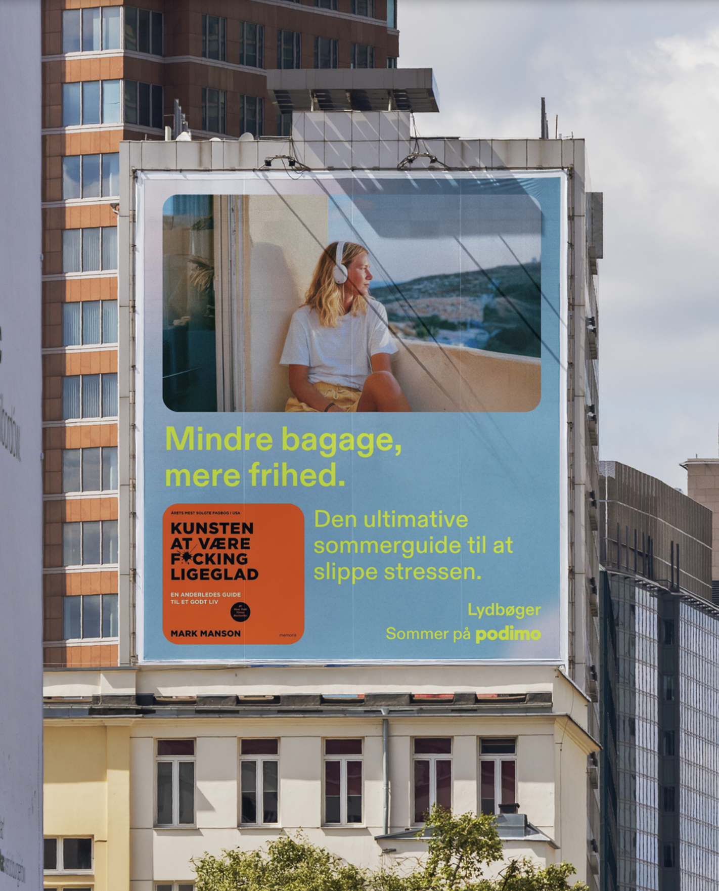
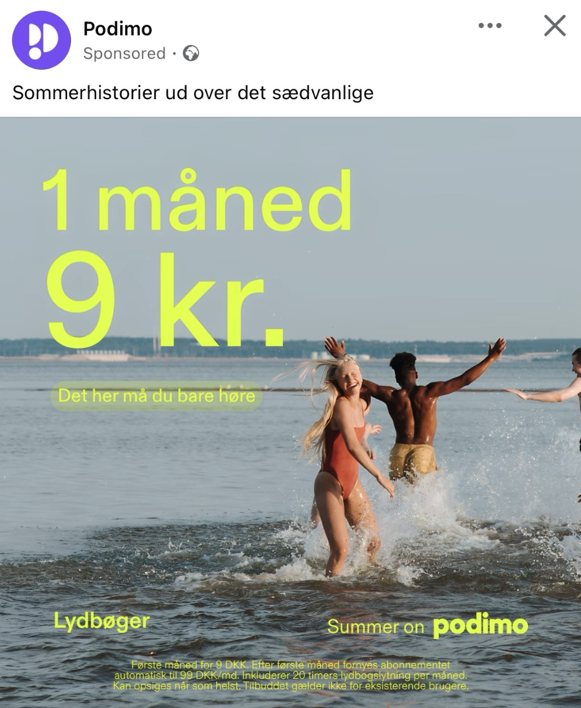
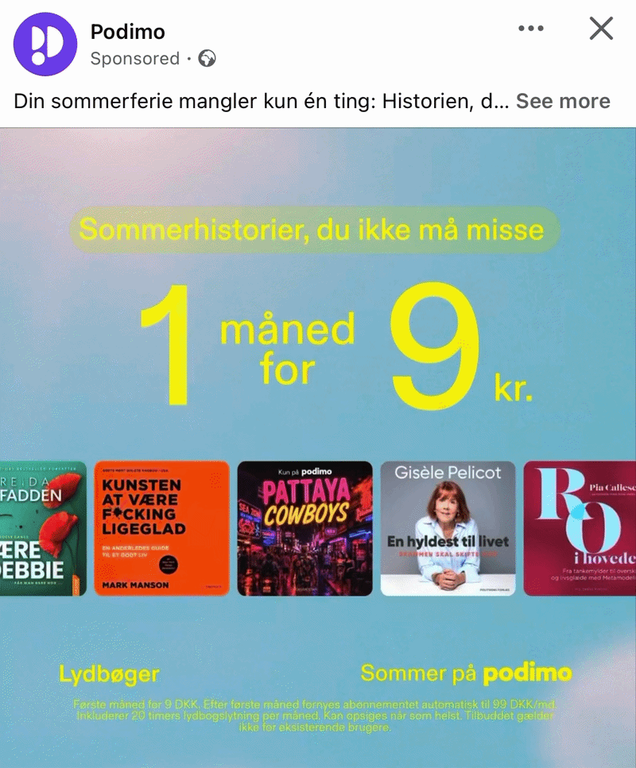

Starting with this one.
Podimo's annual summer campaign, rebuilt as a full-funnel system: one global creative platform, executed and adapted locally across markets, carrying a single idea from first scroll-stop to subscription.
Every summer, Podimo's supply and demand move in opposite directions. Shows go on seasonal breaks or run pre-recorded episodes, so timely releases thin out, exactly as listening peaks, with audiences spending more time on long-form content and exploring new categories through holidays and travel. And into that gap, audiobook competitors push aggressive summer offers to capture the demand.
The strategic answer: don't cede the season. Proactively engage users, position Podimo as the place where the summer's greatest conversations take place, and promote audiobooks as the second layer, meeting the long-form demand the season creates.
Podimo has no shortage of great stories. The campaign's job was to get people talking about the best ones. The concept, "Just wait till you hear this," turns the most natural behavior around great audio, telling someone about it, into the creative engine for the entire campaign.
Rather than a single hero film, the platform was designed as a flexible global framework: a core concept, messaging architecture, and design system built centrally, then handed to local markets to surface the content that would genuinely resonate with their audiences.
Within Podimo's campaign portfolio model, Summer is the yearly key moment: the seasonal window where the brand steps into the cultural conversation, built in close collaboration with social and lifecycle teams, and carried all the way down the funnel.
The same creative idea carries through every stage, with consistent messaging, look, and feel across all channels and markets. What changes is the job each layer does.
Social-first films of everyday people telling a friend about a story they heard on Podimo. Locally cast, locally told, executed directly against the global concept.
Audiences are brought inside Podimo's studios to experience a great story unfolding, cut to end on a cliffhanger that only the platform can resolve.
Direct response creative built from the same system: same voice, same world, now paired with an offer designed to convert the curiosity the funnel created.
The framework was designed so that every market executes from the same strategic and visual core while owning its local expression, with messaging calibrated to each market's brand maturity: newer markets lead with clear value propositions, established markets lead with brand. Rollout was staggered market by market to hit each summer at its peak, with pre-summer boosters priming demand.
Creative and growth teams worked from shared assets and shared metrics across the full channel stack, from upper-funnel video and organic social through paid, web, CRM, and in-app summer playlists, letting performance data from lower-funnel executions feed back into what the brand layer amplified.
This is the operating model behind the work: global brand strategy as the spine, local culture as the voice, and a measurement loop connecting the two.





Two engagement peaks over the flight, and honest attribution: one was a delivery effect, one was creative. The organic-looking edit is what moved people. Spain ran strongest at 40% and grew to 37% of the impression mix.
"A strong leader with a very clear vision on the weight and the value of a brand within a growth ecosystem. His speed of execution has been crucial in fast-paced environments with tight deadlines, consistently delivering top-tier creative while staying nimble to shifting priorities."